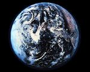

volver al indice
Según nuestros conocimientos, existen nueve planetas que circulan en órbitas alrededor del Sol. Sólo uno, nuestra Tierra, tiene vida; pero hay innumerables soles en innumerables galaxias repartidas a través del universo. Todavía no sabemos si hay vida en otros planetas de otras galaxias.
Sin embargo, cada vez aprendemos más sobre nuestro sistema solar. Durante los últimos 15 años, investigaciones espaciales tales como la misión del Mariner o del Voyager nos han proporcionado detalles inmensos sobre los planetas de nuestro sistema. El sistema solar, a pesar de ser pequeño en comparación con la Vía Láctea, es inmenso cuando se considera a escala humana.
Con su singular combinación de temperatura y atmósfera, así como la presencia de agua, la Tierra es el único planeta del sistema solar que tiene vida.
Durante casi 500 millones de años después de su formación inicial, la Tierra se mantuvo con una temperatura bastante estable de 874,68 grados centígrados. Compuesta predominantemente de hierro y sílice, la Tierra contenía también pequeñas cantidades de elementos radioactivos, principalmente uranio, torio y potasio. A medida que estos elementos se consumían iban produciendo radiaciones que fueron calentando la Tierra, fundiendo el hierro y el sílice. El hierro se hundió hasta el centro, forzando a los silicatos más ligeros a remontar a la superficie causando los violentos procesos que formaron la superficie de la Tierra tal como la conocemos y que continúa formándose incluso hoy.

volver al indice
Oculto tras el manto de misterio, Venus, el planeta más cercano a nosotros toma su nombre de la diosa romana del amor. Por una razón desconocida, la rotación de Venus alrededor de su eje es retrógrada, es decir, en dirección contraria a su rotación alrededor del Sol.
Llamado así en honor del mensajero de pies alados de los dioses romanos, Mercurio recorre su órbita a una velocidad de 48 Km por segundo, por lo que el año de Mercurio sólo dura 88 días terrestres. Por el contrario, tarda casi 59 días en rotar alrededor de su eje.
Como es tan visible y su atmósfera es muy fina y transparente, sabemos más acerca de Marte que de cualquier otro planeta excluyendo la Tierra. El día de Marte es de aproximadamente la misma duración que el de la Tierra, ya que Marte tarda 24 horas y 37 minutos en girar alrededor de su eje, pero el año es de 687 días terrestres. Su distancia del Sol puede variar en unos 57 millones y medio de kilómetros debido a su órbita excéntrica.
Basándonos en las distancias entre los 9 planetas conocidos, debería haber un décimo planeta entre Marte y Júpiter. De hecho, donde debería estar ese planeta, existe una banda de asteroides, unos muy grandes, de hasta 1000 Km de diámetro y otros son simplemente pequeños guijarros.
Júpiter es el mayor de los planetas del sistema solar y se llama así en honor al rey de los dioses romanos. No se considera un planeta terrestre porque su "superficie" es una masa turbulenta de hidrógeno líquido con un núcleo de hierro de un tamaño aproximado al de la Tierra.
Saturno es el segundo planeta más grande del sistema solar y probablemente el más ligero ya que es el menos denso. De hecho, debido a que la relación tamaño-peso es tan grande, Saturno podría flotar en el agua, si pudiera encontrarse un recipiente lo suficientemente grande. Al igual que Júpiter, Saturno es una bola de gas y líquido, con núcleo que posiblemente sea del mismo tamaño que la Tierra.
El planeta más sorprendente es Urano, el séptimo planeta a partir del Sol. Urano tiene un ángulo de aproximadamente 90º con el Sol, por lo que constantemente uno de sus polos se dirige casi directamente hacia el Sol. Sorprendentemente, la temperatura en ambos polos es aproximadamente la misma.
El gigante planeta azul inspiró a las gentes de la antigüedad a darle el nombre según el dios del profundo mar azul. Lo que sabemos acerca de Neptuno es más limitado que lo que sabemos acerca de cualquiera de los otros ocho planetas, aunque el Voyager 2 nos dio nueva información.

Plutón, el noveno y, según nuestros conocimientos, último planeta de nuestro sistema solar, fue pronosticado por Percival Lowell, quien reconoció que había irregularidades inexplicables en las órbitas de Urano y Neptuno. En 1930, Clyde Tombaugh descubrió Plutón exactamente donde Lowell había pronosticado que se encontraría. El nombre Plutón se le dio para mantener la tradición de los dioses romanos y es apropiado (Plutón era el dios del otro mundo y el planeta es oscuro y helado) pero se escogió porque las primeras dos primeras letras eran las iniciales de Percival Lowell.